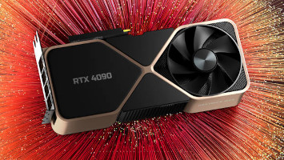
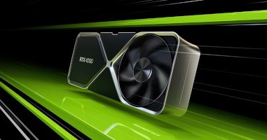

Nvidia RTX 4090: tudo sobre a nova top de linha da marca
RTX 4090 roda qualquer jogo existente, mas é bastante exigente no consumo de energia
A Nvidia RTX 4090 é a placa de vídeo top de linha da Nvidia. Ela oferece processamento gráfico altíssimo, e é indicada não só para usuários que desejam alcançar as maiores taxas de quadros por segundo em todos os jogos já lançados até hoje, assim copo para profissionais que trabalham com renderização de ambientes em 3D.
Como sempre acontece no mundo da informática, desempenho alto também significa preço elevado. Assim, se você pretende comprar uma RTX 4090, prepare-se para colocar a mão bem fundo no bolso.
Além do grande poder de fogo (e de um preço salgado), a GPU conta com as já tradicionais tecnologias de Ray Tracing e DLSS da terceira geração, que garantem gráficos mais imersivos, com iluminação ultrarrealista, e melhor desempenho jogos, sem perder a qualidade gráfica.
Por exigir um grande investimento financeiro, fica a dúvida se vale a pena comprar uma NVIDIA RTX 4090, ou se é melhor escolher modelos mais básicos ou de gerações anteriores.
Para ajudar você, preparamos uma análise detalhada sobre a placa de vídeo, a qual você confere nas linhas a seguir.
Ficha técnica da RTX 4090
- Lançameto: 09/2022
- Linha: GeForce
- Série: RTX
- Fabricante NVIDIA
- Velocidade de clock: 2,23GHz
- Memória de Vídeo(VRAM): 24GB
- Módulo de memória: GDDR6X
- interface da memória: 384-bit
- TDP: 450Wats
Especificações técnicas da RTX 4090
A RTX 4090 entrega números surpreendentes em sua ficha técnica. Construída na mais nova arquitetura Ada Lovelace — terceira geração das arquiteturas RTX —, a placa de vídeo esbanja 16.384 núcleos CUDA, clock base de 2,23GHz e clock em boost de até 2,54GHz. Além disso, ela tem 24GB de memória GDDR6X operando em interface 384-bit.
Todos esses números podem ser traduzidos em desempenho. Ela tem procesamento gráfico de sobra em qualquer tarefa imaginável atualmente.
Ainda não existe jogo ou software que a GPU não consiga rodar com facilidade. Na prática, a placa de vídeo tem poder computacional de 82,6 TFLOPS, mais que o dobro da RTX 3090 Ti da geração anterior.
Porém, todo esse desempenho tem um custo que vai além do dinheiro. A Nvidia RTX 4090 tem TDP de 450 watts, e a NVIDIA recomenda usar uma fonte de energia de pelo menos 850 watts para que a placa funcione corretamente.
Em outras palavras, não basta ter somente a GPU para ganhar toda a performance. É preciso que os outros componentes do PC sejam tão potentes quanto ela.
Desempenho em jogos
Segundo informações oficiais da NVIDIA, a RTX 4090 supera, e muito, a RTX 3090 Ti em qualquer jogo.
A GPU mais recente é a escolha certa para quem quer rodar todos os títulos com a maior quantidade de quadros por segundo possível, com todas as configurações gráficas maximizadas. Mesmo em resoluções muito altas, como 4K.